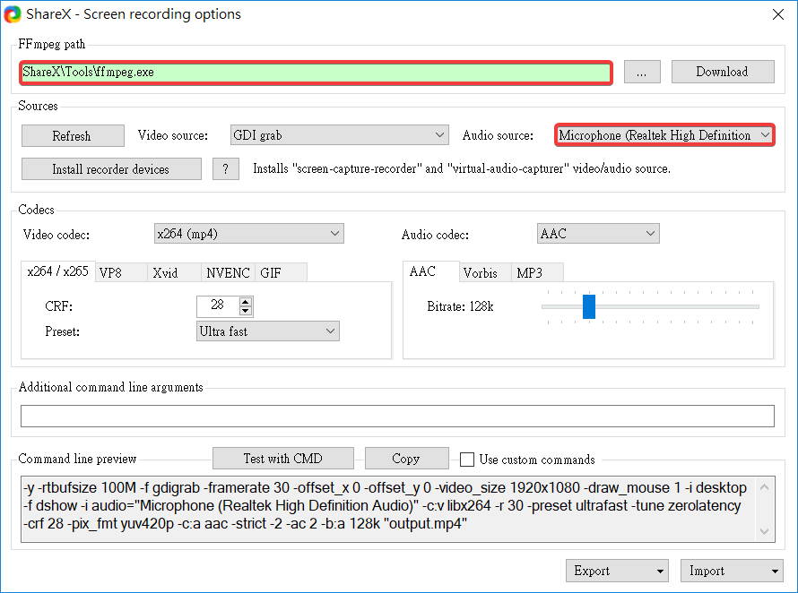

前言:學習如何管理期中作業倉儲中的網站內容與投影片內容
錄製影片需先設定路徑與麥克風

◎課程內容
1.領取倉儲
mde.tw>i>Week1>https://classroom.github.com/a/fGqXU9kO>https://github.com/mdecadp2018>https://github.com/mdecadp2018/site-40623209
2.更改分支
https://github.com/mdecadp2018/site-40623209>Settings>Branches>master>更改>gh-pages
◎課堂心得
這一週主要是學習如何管理期中作業倉儲的網站內容與投影片內容，唯有每週準時放上進度，到期中或期末的時候才不會忙得焦頭爛額，不僅可以妥善管理自己的倉儲，並能擁有更多自己的時間去做其他的事，更加做好時間管理。